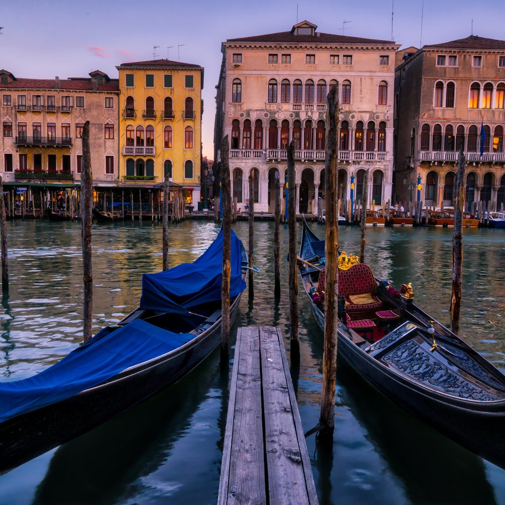
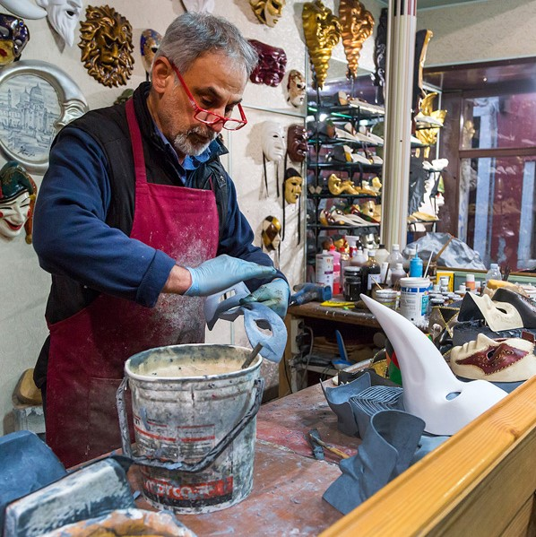

BUDGET

The true joy of Venice is simply walking around the city. You take in a museum or two, but in this city it’s totally fine to just take in the scenery.
St. Mark’s Square Museums (Doge’s Palace, Museo Correr, Museo Archeologico Nazionale, and Monumental Rooms of the Biblioteca Nzionale Marciana): €18
The Grand Canal: Free (but boat tours/gondolas cost extra)
Basilica dei Frari: €3
Peggy Guggenheim Collection: €15
Church of Santa Maria: Free
Venice Natural History Museum:€8
Walking Tours: Free - €50
Kayak Canal Tour: €50/person (kayak), €80 - €100 40-minute, €100
Gondola Ride: €80/person (day), €100/person (around sunset)
Average daily cost: 101€ per person
One week :708€ per person
2 week :1415€ per person
1 month: 3033€ per person
Investigate the cheapest means of getting to the airport. Public transport is often much cheaper than the cost of fuel and airport parking. (Though it may take longer to get to the airport).
When in Venice eat your main meal at lunchtime and away from the main tourist areas. Meals in museums and galleries are often good value for money
ACCOMMODATION

Every tourist should really try to spend at least a couple of nights in Venice. This is definitely not a town to visit as a day trip - a large part of the city's magic comes alive at night, when quiet settles over the canals and lights shimmer on the dark water. You really need to stay in Venice to experience all of its charm and romance.
Staying in Venice can be an expensive business. The good news, however, is that accommodation here is not always quite as costly as you may imagine. Although there are few bargains, if you shop around and book in advance - the earlier the better - you will find some affordable prices. We feature several pages about accommodation in Venice with tips and hotel recommendations. We have stayed at some of the hotels listed ourselves, and have written our own reviews.
Luxury hotels: smart five-star options
Mid-range hotels: some of the best three and four-star choices
Budget hotels: advice and recommendations for a cheaper stay in Venice
Bed and breakfast: B & Bs are increasingly a good, affordable option with more character than many hotels
B&B La Rosa dei Venti
Bed & breakfast' is an increasingly popular accommodation option in Italy.
Often B&Bs offer as much comfort as a 2 or 3-star hotel at half the price, but without the additional services. You're unlikely to find a reception desk, on-site staff, bars, public spaces or a hotel-style sense of occasion.
There's no long-standing B&B tradition, and what you'll find can vary considerably. There's unlikely to be a rosy-cheeked farmer's wife frying up a full English breakfast, but you may find elegant proprietors letting out a couple of rooms in their stately flat, a young go-ahead couple organising rooms to let in their second apartment or even a budget-hotel type set-up without the space or facilities to qualify as a star-rated hotel.
Hotel Campiello:
This selection of mid-range Venice hotels is for visitors who are looking for a good and comfortable place to stay but who don't want to splash out on a five-star holiday.
Three and four-star hotels in Venice are usually efficient, with en-suite rooms, some public space (sometimes not much though) and will be comfortable places to stay.
There is quite a variety though, from basic hotels which just about meet the official star-rating criteria to luxurious hotels which will really stretch your budget. As a rough guide you can expect to pay between €120 and €300 a night for a double room
Palazzo Cendon:
is an all Italian townhouse hotel located in the sunny city of Venice which is known as a tourist hub.
The hotel provides; services by multilingual staff, a lounge, Wi-Fi over a surcharge, meeting rooms, travelling and tours assistance and concierge services.
The hotel has an amazing bar which serves delicious cocktails, snacks and beverages. Moreover one can also order meals through room service which is available for certain fixed hours only.
This traditionally designed accommodation is close to famous places such as the Guglie Waterbus, St. Mary of the Friars, St. Mark’s Basilica and Ca’ d’Oro.
Baglionli Hotel:
Opulently furnished with Murano glass chandeliers, the elegant antique furniture dates back to the 18th-Century.
The rooms feature marble bathrooms with both bathtubs and showers, a minibar, a hairdryer, small lounge and a room safe. The TVs access satellite channels.
Guests have access to a concierge, a 24-hour reception and room service. The hotel is pet friendly, has an elevator and is wheelchair accessible. It also features a laundry and shoe cleaning service.
Luna Hotel Baglioni’s Canova restaurant specializes in Italian and Venetian dishes. The hotel also has a bar.
TRANSPORT

Venice is an ideal city to "WALK IN", but even the most dedicated walkers will probably want to use public transportation in Venice at some point – it’s on the water, after all, and the novelty alone is worth one trip on one of Venice’s famous boats.
The good news is that Venice’s public transportation system is really easy to use – there are very few lines to keep track of in Venice proper and only a couple areas where you won’t be walking anyway. The bad news is that tickets seem more expensive than they should for what you’re getting, so it’s important to know all your transport options in order to get the most for your money.
Venice Public Transportation: Waterbus and Mainland Buses US$12.40/ per person
Treviso Airport to Mestre and Venice by Express Bus: From US$14.17/ per person
Marco Polo Airport to/from Mestre Train Station: Express Bus From US$9.45/ per person
Venice Marco Polo Airport Transfer: Shared Water Taxi From US$37.79/ per person
Venice Transfer-Shared Water Taxi to Airport: From US$37.79/ per person
Venice Marco Polo Airport Shared Transfer by Water Taxi: From US$38.97/ per person
Marco Polo Airport to/from Mestre Train Station:
Take the worry out of your transportation needs between Marco Polo Airport and Mestre Train Station and transfer by air-conditioned express bus. Start your trip worry free, and enjoy generous baggage room beneath the passenger compartment.
Traghetto (trah|GET|toh)
These look for all intents and purposes like gondolas, but they are used only to cross the Grand Canal at various points where there isn’t a canal-spanning bridge nearby. There are traghetto stands along the Grand Canal, and boats that ferry passengers back and forth from one shore to the other regularly. These gondola drivers don’t sing and don’t dress in striped shirts, and passengers generally don’t sit down for the crossing. Traghetto is singular; more than one and it’s traghetti you’re talking about.
Gondola (GOHN|doh|lah)
hese are the quintessential images of Venice, and are available for private hire for leisurely cruises around the city’s canals. Yes, they cost a small fortune. Read more about Venice gondolas rides if your trip won’t be complete without one (or you’re trying to impress your date). Gondola is singular; more than one and it’s gondole you’re talking about.
Venice Marco Polo Airport Shared Transfer by Water Taxi:
Eliminate the stress from your arrival with a pre-booked shared transfer by water taxi from Venice Marco Polo Airport to your accommodation in Venice. Enjoy the perfect combination of price and comfort with this easy way to reach the stunning city center.
LOCAL

Every tourist should really try to spend at least a couple of nights in Venice. This is definitely not a town to visit as a day trip - a large part of the city's magic comes alive at night, when quiet settles over the canals and lights shimmer on the dark water. You really need to stay in Venice to experience all of its charm and romance.
Staying in Venice can be an expensive business. The good news, however, is that accommodation here is not always quite as costly as you may imagine. Although there are few bargains, if you shop around and book in advance - the earlier the better - you will find some affordable prices. We feature several pages about accommodation in Venice with tips and hotel recommendations. We have stayed at some of the hotels listed ourselves, and have written our own reviews.
Luxury hotels: smart five-star options
Mid-range hotels: some of the best three and four-star choices
Budget hotels: advice and recommendations for a cheaper stay in Venice
Bed and breakfast: B & Bs are increasingly a good, affordable option with more character than many hotels